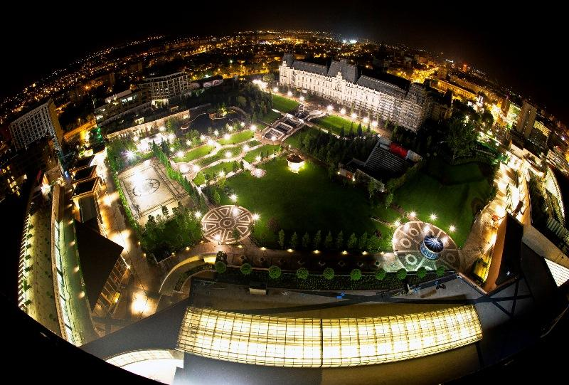
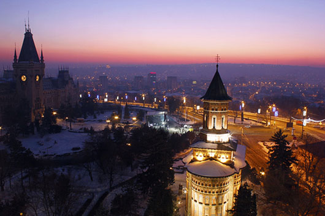

Obiective turistice din municipiul Iasi
Municipiul Iasi este resedinta judetului Iasi si principalul centru urban din nord-estul Romaniei. Iasi a fost capitala Moldovei în perioada 1564 - 1859, una dintre cele doua capitale ale Principatelor Unite între 1859 si 1862 si capitala Romaniei intre 1916-1918.Iasi este centrul cultural, economic si academic al Moldovei. Aici functioneaza Universitatea Alexandru Ioan Cuza, una din cele mai prestigioase institutii academice din Romania, precum si alte patru universitati publice si sapte particulare. Orasul Iasi a fost mentionat pentru prima oara într-un privilegiu comercial emis în 1408 de domnul Moldovei Alexandru cel Bun. Totusi, deoarece existau cladiri mai vechi de aceasta data (spre exemplu presupusa Biserica armeana costruita în 1395), se crede ca orasul este mult mai vechi, cel putin cu cateva decenii, de aceasta data. In 1564, domnitorul Alexandru Lapusneanu a mutat aici capitala Moldovei de la Suceava. În 1640, Vasile Lupu a infiintat aici prima scoalã în limba romana si o tipografie în biserica Trei Ierarhi. In 1643, prima carte tiparita în Moldova a aparut la Iasi.

In primele sale doua secole de existenta certa (secolele XV-XVI), orasul a cunoscut o dezvoltare lenta. In perioada sa de inceput, orasul nu era foarte intins si nici populat peste masura. Vatra asezarii era in apropierea curtii domnesti, iar prima ulita mai importanta pornea de la poarta acesteia si mergea spre rasarit. Este vorba de Ulita Ruseasca, ce se continua cu Ulita Trapezeneasca (sau a „schimbatorilor de bani", actualele strazi Grigore Ureche si Grigore Ghica Voda), al caror vechi traseu a fost schimbat de constructiile din zona Teatrului Luceafarul de azi. Aici se afla piata orasului („dricul" tirgului), unde negustorii isi vindeau marfurile, dar si vama (linga biserica Sfintul Lazar).
Strainii au reprezentat un izvor permanent de populatie pentru oras, ca si o sursa de venituri pentru domnie. Pe linga romani, au venit aici armeni, unguri, polonezi, nemti sau rusi, grupati in functie de religie si ocupatie.

Numele orasului Iasi reprezinta o alta sursa de controversa pentru istorici. Dintre teoriile fanteziste, unele pun originea numelui pe seama tribului iazigilor (populatie iraniana), altele cauta o origine slava, insa trei sint ipotezele demne de a fi luate in seama.Prima deriva numele de la iasi, numire data alanilor (tot populatie iraniana) de rusi, iar o a doua leaga toponimul Iasi de un nume de persoana, de un anume Ias (derivat de la Ioan sau Iacob),intemeietorul sau stapinul asezarii, intr-o perioada greu de determinat.
Constantin Cihodaru, in Istoria orasului Iasi, avansa o alta teorie: numele de Iasi ar deriva din numele dat in evul mediu unei categorii de luptatori cu arcul. Indiferent ca e nume etnic sau cu origine ce deriva din numele de persoane, toponime cu aceasta denumire sint prezente in tot spatiul romanesc (in Arges, Gorj sau Brasov).
Palatul culturii Iasi